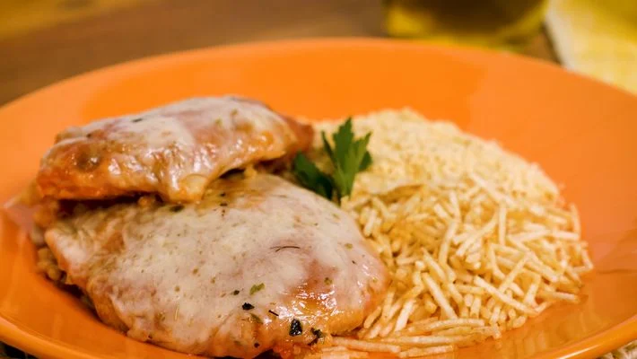

FILÉ DE FRANGO À PARMEGIANA

Ingredientes:
• 6 filés de peito de frango
• 2 dentes de alho
• sal e pimenta-do-reino a gosto
• 4 colheres de (sopa) de maionese
• 2 xícaras de (chá) de farinha de rosca
• 1 lata de molho de tomate
• 200 g de mussarela
• óleo o suficiente para untar
• orégano a gosto
Modo de Preparo:
1. Coloque os filés entre 2 filmes plásticos.
2. Bata suavemente com o martelo de carne para ficarem com a mesma espessura.
3. Tempere - os com o alho, o sal e a pimenta.
4. Passe - os pela maionese e a farinha de rosca.
5. Coloque em uma assadeira untado com o óleo
6. Leve ao forno médio por uns 30 minutos.
7. Retire do forno, cubra com a mussarela, o molho e o óregano.
8. Leve ao forno novamente só para gratinar.
9. Sirva em seguida acompanhado de arroz branco e batata palha.
VOLTAR